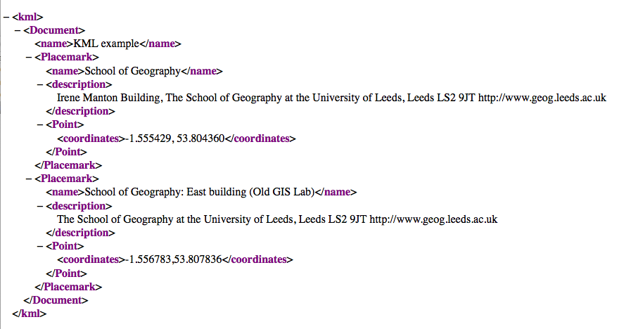
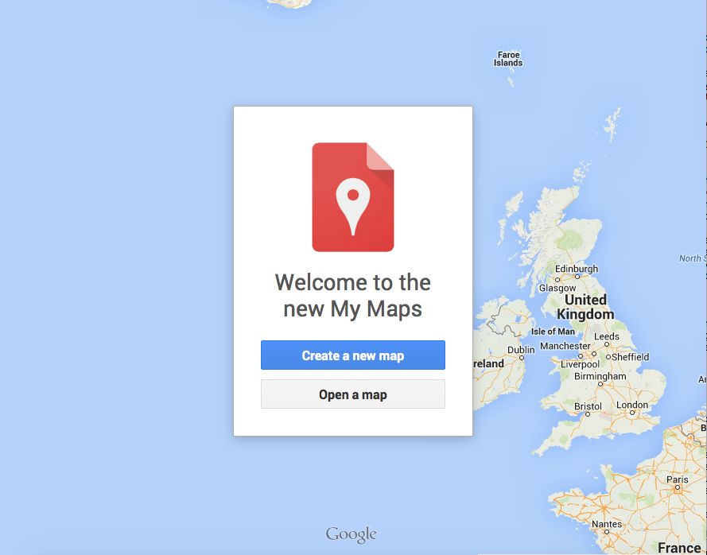
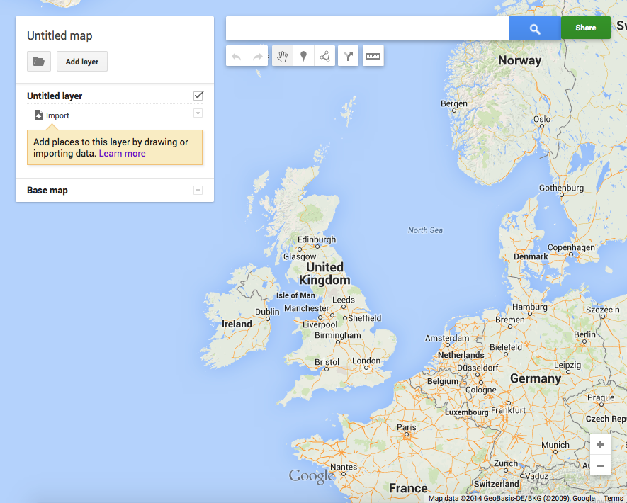
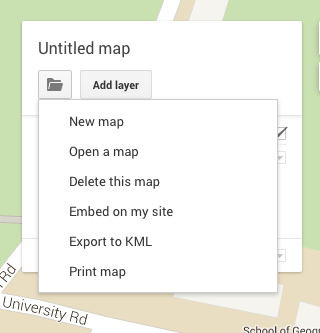

Getting Started
Basic KML
You have now created a first map, using
the Google Maps JavaScript API. Before moving further on, we shall
revisit a use of Google Maps described here. Here, using a
KML file it was explained that it is possible to use an external
file to supply a list of markers for a Google Map. We will now
experiment with this.
As a reminder, here is the original KML file:

- Revisit the kml module material and read over.
- Download this KML file
- Open it in your editor to have a look and then save it as kml_eg1.kml in your
WWW/geog5870 directory. This is for two reasons (i) KML files need to be on a public server and not a local drive, and (ii) for safe keeping!
- Browse to My Maps. You will see the following - sign up!

- Hit the Import button and navigate to the KML file.

- You should hopefully see map centred on the University, with a couple of markers added over the
School of Geography. The markers are defined as placemarks in the kml
file, with the locations being defined as a set of co-ordinates.

Adjusting place marks with KML
- Create a copy of the kml file in your WWW/geog5870 called
kml_eg2.kml
- Edit the copy, and try changing the co-ordinates of
one of the placemarks slightly.
- Now import this KML file into My Maps.
- How far has the second
marker moved? Experiment with changing the co-ordinates, in order to get
an idea of the sensitivity of the co-ordinate system.
Once you have created your map, My Maps allows the following options:

Have a go at:
- Creating a new KML file with coordinates and at least two placemarks based on somewhere you know.
- Import your KML file into My Maps.
- Export your finished map to KML and compare your original KML and the new exported one. See any differences?
External KML files can contain as many placemarks as you like, but you
will need to identify co-ordinates for any place that you wish to use.
These co-ordinates must be in latitude / longitude decimal degrees.
A number of services exist that will convert between various location
identifiers, and the correct co-ordinates. These are know as Geocoders.
A variety of geocoding services are available, including one from
Google. The Google geocoder is intended to be used as a remote service
by a program, although it is possible (though unwieldy!) to use it
directly to extract co-ordinates. This can be done by creating a url of
the form:
http://maps.googleapis.com/maps/api/geocode/output?address=address&
sensor=true_or_false
There are three terms in this example that must be
set. Firstly, the output element of the URL must be set to select a
preferred output style. This can be either xml or json; both of which
are primarily intended for processing by machines rather than by humans.
Of the two, the xml format is easier to use manually, especially as it
can be displayed directly by most web browsers, although json is easier
to handle using JavaScript. The
address term shown in bold in this example, is the location that you want
to convert, and these can include UK postcodes. Locations should be
formatted with a '+' instead of a space, and it is wise to include a
country identifier as well. Thus, to search for the postcode 'LS2 9JT'
you would use:
http://maps.googleapis.com/maps/api/geocode/xml?address=ls2+9jt+uk&
sensor=false
Note that you may often retrieve multiple alternatives.
Copy the above URL into a web browser and look at the output. Can you
see the coordinates in the XML file? Add a postcode in and get the coordinates, put them in the KML file and upload it in My Maps - does it show the right place?
When you are happy with this,
move onto Google Map API.
[ Next: Google Map API ]
[Course Index | Unit Overview]